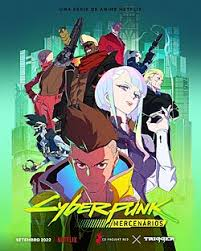

Cyberpunk: Edgerunners é uma série animada baseada no universo de Cyberpunk 2077. A história acompanha David Martinez, um jovem que tenta sobreviver em Night City, um futuro dominado por tecnologia e implantes cibernéticos.

Clique no botão abaixo para assistir ao trailer:
▶ Assistir Trailer